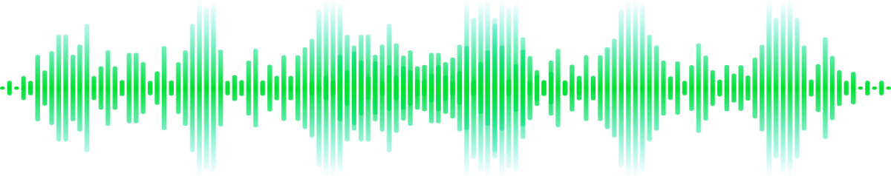

こんにちは
Robot can now understand voice commands in 10 languages
ロボットは10言語の音声コマンドを理解できるようになりました
Robot understands more languages
ロボットはより多くの言語を理解する
Understood in real-time
Boston AI Assistant
Ask me
something!
something!


Boston sits near the top of the global AI map by leaning hard on its universities, hospitals, and life science institutions, where lab automation, surgical robotics, and clinical AI help turn research into real life treatments for patients.
 Beantown feels like it's half beautiful cobble-stone streets and half college campus with a wicked nerd energy and drive to build the next unicorn. Cambridge trailblazes AI with MIT and Harvard labs, Innovation District hosts data cloud startups, and Allston houses an indie maker scene that together pave an AI and robotics future that is clinical, civic, and a little stubbornly New England.
Beantown feels like it's half beautiful cobble-stone streets and half college campus with a wicked nerd energy and drive to build the next unicorn. Cambridge trailblazes AI with MIT and Harvard labs, Innovation District hosts data cloud startups, and Allston houses an indie maker scene that together pave an AI and robotics future that is clinical, civic, and a little stubbornly New England.
Be seen


Loved by more than
10k+ users